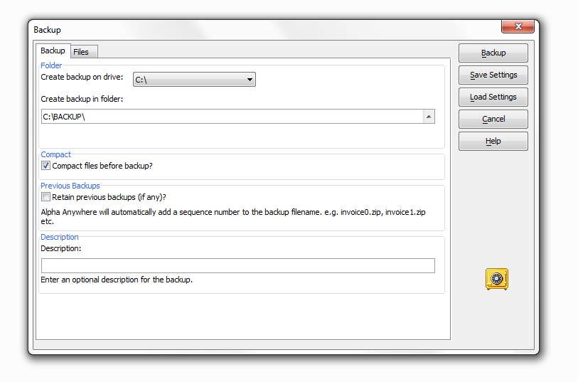

What is a Dialog?
A dialog, or dialog box, is used throughout Windows programs to interact with the user. A dialog can be used to gather information from the user, or to present information to users. Xdialog is an extremely powerful and flexible language for describing a standard Windows dialog box. In fact, testament to the power and flexibility of Xdialog is the fact that much of what's new in Alpha Anywhere is written using Xdialog.
Xdialog allows you to create dialog boxes that contain all standard Windows controls, such as text boxes, combo boxes, list boxes, drop-down combo boxes, radio buttons, check boxes, tab controls, tree controls and more. In addition you can put images on dialog boxes, and you can create both modal and modeless dialog boxes. In a modal dialog box, the user must close the dialog before giving focus to another window, while in a modeless dialog box, the user can leave the dialog box open, while continuing to work in other windows.
The following dialog, which is displayed when you choose the Backup Database command, is an example of a dialog box created using Xdialog.

Xdialog will allow you to add dialog boxes to your application that are indistinguishable from dialog boxes that an experienced C or C++ programmer might create. And, it will allow you to do it in a fraction of the time that it would take even the most skilled C programmers!
See Also
List Boxes with Resizable Columns, Static Text Genie, Xdialog Control Reference, Xdialog Preview Button
Limitations
Desktop applications only